Als "Offene Posten" bezeichnet man eine Buchung auf einem Konto, für welche es keine Ausgleichsbuchung gibt, z.B.:
ü Debitoren-Fakturen (Forderungen)
ü Kreditoren-Fakturen (Verbindlichkeiten)
ü Zahlungen ohne Zuordnung zu einer Faktura
Hinweis
Offene Posten werden im Buchungsprogramm bei Einsatz der Buchungsschlüssel…
ü DF - Debitoren-Faktura
ü DZ - Debitoren-Zahlung
ü KF - Kreditoren-Faktura
ü KZ - Kreditoren-Zahlung
… gleichzeitig mit der Sachbuchhaltungsinformation erfasst.
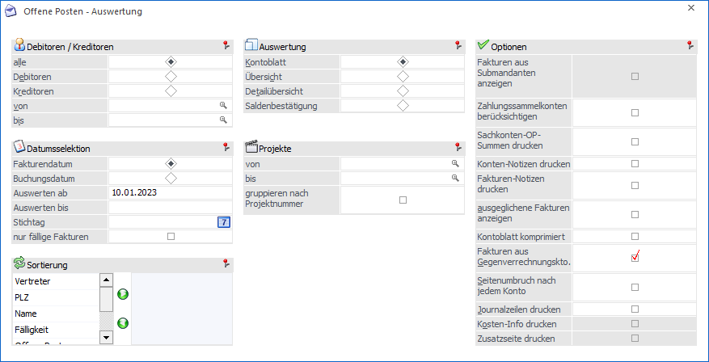
Offene Posten werden in einer Reihe von Auswertungen verarbeitet. Die wichtigsten Arbeitsbereiche, die der Auswertung von Offenen Posten dienen, sind:
ü das Mahnwesen
ü der Zahlungsverkehr
ü die Liquiditätsvorschau
ü die Offenen Posten-Übersichtsblätter
Die Offenen Posten-Übersichtsblätter können im Menüpunkt…
1 WinLine FIBU
1 Auswertungen
1 Offene Posten
… ausgewertet werden. Der Umfang der Ausgabe kann hierbei durch eine Reihe von Einstellung und Selektionskriterien individualisiert werden.
Debitoren / Kreditoren
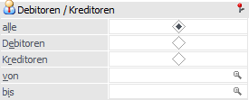
Ø Kontenbereich
An dieser Stelle kann definiert werden, ob Offene Posten von Debitoren (Forderungen), Kreditoren (Verbindlichkeiten) oder beiden ausgegeben werden sollen.
Ø Kontenbegrenzung
Hier kann eine Einschränkung der Ausgabe durch Angabe von Kontengrenzen erfolgen (abhängig vom gewählten Kotenbereich). Werden die Felder leer gelassen, so bewirkt dieses die Ausgabe aller Konten.
Datumsselektion
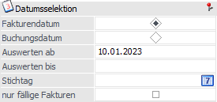
Ø Fakturendatum / Buchungsdatum
An dieser Stelle kann definiert werden, ob sich die folgenden Datumsangaben auf das Fakturendatum oder das Buchungsdatum beziehen sollen.
Hinweis
Für die Berechnung der Fälligkeiten wird immer das Fakturendatum verwendet! Auch die Zahlungen werden aufgrund des Zahlungsdatums und nicht aufgrund des Buchungsdatums selektiert.
Ø Auswerten ab
Durch Angabe eines Datums kann hier festgelegt werden, ab welchem Datum die Offenen Posten angezeigt werden sollen.
Ø Auswerten bis
Mit dieser Funktion kann man das Fakturen- bzw. Buchungsdatum zeitlich einschränken.
Ø Stichtag
Stichtagseingabe, d.h. Einschränkung des Datums, bis zu dem die OPs (alle Fakturen und Zahlungen) ausgewertet werden sollen. Die Ausgabe ist möglich als Kontoblatt (inkl. einer komprimierten Darstellung), Übersicht und Detailübersicht. Wird eine Stichtags-OP-Auswertung abgefragt, kann nicht gleichzeitig die Option "ausgeglichene Fakturen anzeigen" verwendet werden.
Ø nur fällige Fakturen
Wird diese Checkbox gesetzt, werden nur jene OPs ausgegeben, deren Fakturendatum (+ Nettotage) vor dem aktuellen Datum bzw. vor dem eingegebenen Stichtag liegt.
Hinweis
Für die Berechnung der Fälligkeiten wird immer das Fakturendatum verwendet! Auch die Zahlungen werden aufgrund des Zahlungsdatums und nicht aufgrund des Buchungsdatums selektiert.
Auswertung
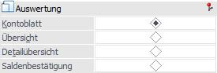
Ø Auswertearten
An dieser Stelle kann die Art der Offenen Posten - Auswertung hinterlegt werden. Folgende Varianten stehen zur Verfügung:
ü Kontoblatt
Das "Kontoblatt" ist
die klassische OP-Auswertung und gibt pro Konto die Offenen Posten aus.
ü Übersicht
Die Auswerteart
"Übersicht" gibt Auskunft über die Liquiditätsentwicklung. Hierbei wird pro
Debitor / Kreditor angezeigt, in welchen Zeiträumen welche Zahlungen fällig
werden bzw. fällig waren. Die Analyse-Zeitgrenzen sind mit den Werten fällig in
0, 30, 60 und 90 Tagen vorbesetzt und können individuell angepasst werden (die
Speicherung erfolgt pro Arbeitsplatz).
Beispiel
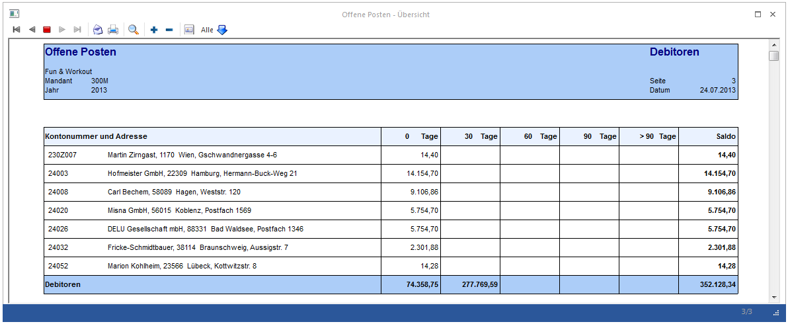
ü Detailübersicht
Entscheidet man
sich für die Auswerteart "Detailübersicht", so werden die nach Fälligkeit
sortierten Offenen Posten nicht nur in einer Summe pro Personenkonto
ausgewiesen, sondern es wird - wie beim OP-Kontoblatt - jeder einzelne OP
ausgewiesen (plus der Summe der OPs pro Fälligkeitsfrist).
ü Saldenbestätigung
Die
"Saldenbestätigung" ist als Dokument für den Debitoren / Kreditoren definiert.
D.h. es erfolgt immer ein Seitenumbruch nach jedem Konto und bei einer Ausgabe
in den Spooler werden pro Konto einzelne Drucke abgestellt.
Achtung
Aktiviert man die Auswahl "Saldenbestätigung", so ist es nicht möglich die Saldenbestätigungen für Debitoren und Kreditoren gemeinsam anzudrucken. Grund dafür ist der, dass für Debitoren und Kreditoren jeweils ein eigenes Formular (Debitor => P01W44SD, Kreditor=> P01W44SK) verwendet wird.
Projekt
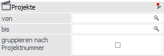
Ø Projekt von / bis
An dieser Stelle kann nach den Projekten eingeschränkt werden. Bleiben die Felder leer, so werden alle Offenen Poste, unabhängig vom zugewiesenen Projekt, bei der Ausgabe berücksichtigt.
Ø gruppieren nach Projektnummern
Durch Aktivierung dieser Option werden die Fakturen eines Debitors oder Kreditors nach Projektnummer sortiert ausgegeben. Zusätzlich wird für jede Projektnummer, unter den jeweiligen Fakturen, eine Summenzeile erzeugt.
Tage
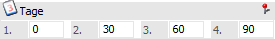
Ø Zeitraum 1 bis 4
An dieser Stelle können die Zeitgrenzen der Analysezeiträume für die Auswertearten "Übersicht" und "Detailübersicht" definiert werden (Zahl zwischen -999 und 9999).
ü positive Zahl => Zahlung fällig in ... Tagen
ü negative Zahl => Zahlung war fällig vor ... Tagen
Hinweis
Die Zeitgrenzen müssen in aufsteigender Reihenfolge eingetragen werden.
Optionen
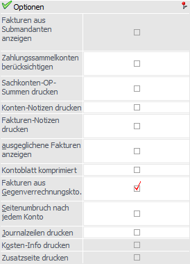
Ø Fakturen aus Submandanten anzeigen
Mit Hilfe diese Option werden die Offenen Posten des Hauptmandanten und aller Submandanten ausgegeben.
Vor der Ausgabe wird eine temporäre Tabelle mit den betroffenen Konten gefüllt, die dann wiederum für die Ausgabe verwendet wird. Bei einer mandantenübergreifenden Ausgabe werden auch die FIBU-Salden aus allen Mandanten geladen, summiert und angezeigt.
Diese Option steht nur im Hauptmandanten für das OP-Kontoblatt, die Übersicht und die Detailübersicht zur Verfügung.
Sowohl die Option "Fakturen aus Submandanten andrucken" als auch "Zahlungssammelkonto berücksichtigen" können gemeinsam verwendet werden.
Hinweis
Bei den OPs der Submandanten steht immer die Buchungsnummer "0", weil ein Öffnen der Buchungsinfo in anderen Mandanten nicht möglich ist.
Ø Zahlungssammelkonten berücksichtigen
Aktiviert man diese Checkbox, so werden bei jedem Konto auch die Zeilen aller "Zahlungs-Sub-Konten" mit Überschriftenzeile angedruckt. Für diese Konten werden dann keine eigenen OP-Blätter mehr gedruckt. Beim Drucken der Endsumme für ein Zahlungssammelkonto werden auch die FIBU-Salden aller "Zahlungs-Sub-Konten" berücksichtigt.
Ø Sachkonten-OP-Summen drucken
Wird die Checkbox aktiviert, wird vor den Endsummen des Kontos für jedes Sachkonto-OP-Konto der Saldo jener Sachkonten-OPs angedruckt, bei denen das Personenkonto (Sachkonto-OP erstellen) eingetragen ist. Die Checkbox steht jedoch nicht für den Auswertetyp "Übersicht" zur Verfügung.
Wird in der Auswertung auf die Sachkonten-OP-Kontonummer geklickt, wird die entsprechende Sachkonten-OP-Auswertung angezeigt.
Hinweis
Wenn ein Konto keine OPs hat, wird die OP-Auswertung nicht gedruckt, auch wenn Sachkonto-OPs vorhanden sind und die Checkbox "Sachkonten-OP-Summen andrucken" aktiviert ist.
Ø Konten-Notizen drucken
Wird diese Option aktiviert, so wird der im Konto enthaltene Notiztext vollständig angedruckt. Die Konten-Notiz wird jeweils für das ausgewertete Konto ausgegeben, nicht z.B. für ein Gegenverrechnungskonto oder Zahlungssammelkonto.
Ø Fakturen-Notizen drucken
Wird die Option aktiviert, so wird der in der Faktura enthaltene Notiztext vollständig angedruckt. Die Notiz der Fakturen wird angedruckt und nicht der Text aus Zahlungen oder Vorauszahlungen.
Hinweis
Die Option "Fakturen-Notizen drucken" steht für die Ausgabe "Übersicht" nicht zur Verfügung.
Ø ausgeglichene Fakturen anzeigen
Durch Aktivieren dieser Option werden auch jene Fakturen angezeigt, die bereits ausgeglichen wurden (Mahnstufe -1) oder zum Ausgleich markiert wurden (Mahnstufe -2), aber noch nicht durch einen Fakturen-Reorg gelöscht oder effektiv gebucht wurden. Ansonsten werden nur jene Fakturen angezeigt, die noch nicht ausgeglichen wurden (d.h. Mahnstufe >= 0).
Ø Kontoblatt komprimiert
Wird diese Option aktiviert, so wird für jeden Offenen Posten nur mehr eine Zeile ausgegeben. Das ist z.B. dann interessant, wenn es zu vielen Fakturen mehrere Teilzahlungen gibt, man aber nur wissen möchten, was bei jedem OP offen ist (ohne alle Teilzahlungsinformationen anzuzeigen).
Ø Fakturen aus Gegenverrechnungskonten
Mit Hilfe dieser Option werden auch die OPs der Gegenverrechnungskonten angedruckt (z.B. Debitorische Kreditoren).
Ø Seitenumbruch nach jedem Konto
Durch Aktivieren dieser Option wird jedes Konto auf einer eigenen Seite gedruckt.
Ø Journalzeilen drucken
Ist diese Option aktiviert, so werden zur OP-Zeile auch die FIBU-Zeilen angedruckt, mit denen der OP ursprünglich gebucht wurde.
Ø Kosten-Info drucken
Sobald die Option "Journalzeilen drucken" aktiviert ist, kann auch noch die KORE-Information dazu angezeigt werden.
Ø Zusatzseite drucken
Diese Einstellung dient für die Saldenbestätigung, mit der auf einer weiteren Seite zusätzliche Informationen (z.B. für eine Rückantwort) gedruckt werden können. Bei Ausgabe der Saldenbestätigung in den Spooler wird für jedes Konto ein eigener Eintrag in der Spooldatei erzeugt.
Sortierung
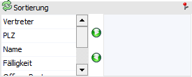
Ø Sortierung
Zusätzlich zu den Einschränkungen zum Ausdruck von Offenen Posten kann noch die Sortierung vorgegeben werden, wobei dieser für alle Arten der OP-Liste dient. Hierbei stehen die folgenden Parameter zur Verfügung:
ü Vertreter
ü Postleitzahl
ü Name
ü Fälligkeit
ü Offene Posten
ü Projektnummer
Die Sortierung selbst kann durch einen Doppelklick auf den entsprechenden Eintrag vorgenommen werden, wobei auch mehrere Sortiermöglichkeiten ausgewählt werden können. Des Weiteren können die Sortiermöglichkeiten durch Verwendung der Pfeiltasten bestimmt werden oder mittels Drag & Drop gezogen werden.
Erweiterte Selektion
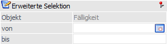
Ø Objekt von / bis
Für das erste Objekt der Sortierung kann eine zusätzliche Einschränkung vorgenommen werden.
Beispiel
Die Sortierung soll nach Postleitzahl vorgenommen werden. Dabei sollen aber nur die Kunden ausgewertet werden, die in Wien (Postleitzahl 1000 bis 1299) Zuhause sind.
Buttons
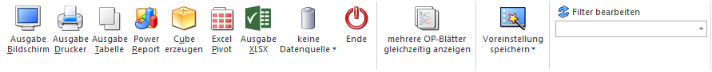
Ø Ausgabe Bildschirm
Mit Hilfe des Buttons "Ausgabe Bildschirm" oder der Taste F5 wird die Auswertung am Bildschirm ausgegeben.
Ø Ausgabe Drucker
Durch Anwahl des Buttons "Ausgabe Drucker" wird die Auswertung am Drucker ausgegeben.
Ø Ausgabe Tabelle
Über den Button "Ausgabe Tabelle" wird die Tabellenanzeige geöffnet. Weitere Details entnehmen Sie bitte dem Kapitel Offene Posten.
Ø Power Report
Durch Drücken des Buttons "Power Report" wird die Auswertung auf Basis von Cube-Daten grafisch dargestellt. Die Ausgabe ist individuell anpassbar und erfolgt in der Form von "Widgets", die unterschiedlichsten Darstellungen ermöglichen.
Ø Cube erzeugen
Wenn die Option "Cube erzeugen" gewählt wird (nur möglich, wenn auch die entsprechende Lizenz dafür vorhanden ist), dann wird die Offene Posten - Auswertung im "Olap Viewer" angezeigt. In diesem können die Daten nach verschiedenen Gesichtspunkten ausgewertet werden.
Ø Excel Pivot
Durch Anwahl des Buttons "Excel Pivot" werden die selektierten Zeilen in Form einer Pivot Ausgabe in Microsoft Excel (2007 oder höher) angezeigt
Ø Ausgabe XLSX
Mit Hilfe des Buttons "Ausgabe XLSX" wird die Auswertung mit den von Ihnen definierten Selektionen an Microsoft Excel übergeben.
Ø Datenquelle
Mit Hilfe dieser Auswahl kann definiert werden, ob und wie eine Datenquelle (d.h. ein Snapshot oder eine MasterView) verwendet werden soll.
ü Keine Datenquelle
Bei Auswahl
von "keine Datenquelle" wird keine zuvor angelegte Datenquelle genutzt. D.h. die
Daten werden von der WinLine "live" ermittelt und in der gewünschten Form
ausgegeben.
Hinweis
Da die BI-Ausgabe (z.B. Cube oder Power Report) immer eine Datenquelle benötigt, wird im Hintergrund eine temporäre Datenquelle (Snapshot) gebildet.
ü Datenquelle
erstellen/aktualisieren
Die Daten werden zur Laufzeit ermittelt und an einen
zu definierenden Snapshot übergeben. Nach dem Füllen der Datenquelle wird die
gewünschte Ausgabevariante über die Datenquelle erzeugt. Dieser Vorgang kann mit
einer Zeitverzögerung verbunden sein, da die Daten zusätzlich gespeichert werden
müssen.
ü Datenquelle verwenden
Bei der
Verwendung eines Snapshots werden die Daten direkt aus der Datenquelle gelesen,
d.h. die für die Ausgabe benötigten Daten können ohne Verzögerung in der
gewünschten Variante ausgegeben werden.
Wird hingegen eine MasterView
gewählt, so werden die Daten für die Ausgabe "live" ermittelt, wobei diese so
aktuell sind wie die zugrunde liegenden Datenquellen.
Hinweis
Der Button "Datenquelle verwenden" wird nur angeboten, wenn für diesen Bereich (bezogen auf den aktuellen Benutzer / Mandanten) zumindest eine private oder öffentliche Datenquelle existiert. Des Weiteren steht die Ausgabevariante "Ausgabe Tabelle" nicht zur Verfügung.
Hinweis
Weitere Informationen zum Thema "Datenquellen" entnehmen Sie bitte dem Kapitel "Die Datenquelle".
Ø Ende
Durch Drücken des Buttons "Ende" bzw. der Taste ESC wird das Fenster geschlossen.
Ø mehrere OP-Blätter gleichzeitig anzeigen
Durch Aktivierung des Buttons ist es möglich, die Bildschirm-Ausgabe oder die Tabellenausgabe des OP-Blattes jeweils bis zu 10x gleichzeitig zu öffnen. Die Einstellung des Buttons wird benutzerabhängig gespeichert und beim nächsten Öffnen des Fensters wiederhergestellt.
Ø Voreinstellung speichern
Durch Anwahl dieses Buttons erfolgt eine benutzerspezifische Speicherung aller im Fenster getätigten Einstellungen. Diese sogenannten "Voreinstellungen" können jederzeit wieder abgerufen werden und ermöglichen dadurch ein schnelleres und zielorientierteres Arbeiten (nähere Informationen entnehmen Sie bitte dem Kapitel "Die Voreinstellungen").
Ø Filter bearbeiten
Durch Anklicken des Buttons "Filter bearbeiten" kann die Auswertung nach frei definierbaren Kriterien eingeschränkt werden.
Achtung
Wird eine OP-Auswertung in einem Vorjahr - also nicht im aktuellen Wirtschaftsjahr - ausgegeben, so werden nur die in diesem Wirtschaftsjahr entstandenen Offenen Posten angedruckt. Bei Zahlungen zu einer Faktura, die erst in einem späteren Jahr gebucht wurde, wird diese als Vorauszahlung dargestellt.
Bildschirminformationen
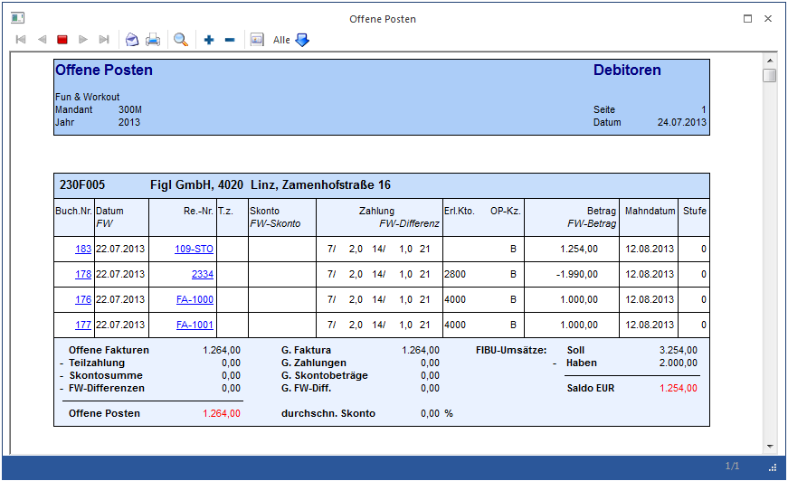
Ø BNr
Buchungsnummer der Sachbuchungszeile (Prima Nota), die die Basis der Offenen Posten-Buchung bildet.
Am Bildschirmausdruck wird die Buchungsnummer unterstrichen und farblich hinterlegt dargestellt. Das bedeutet, dass hier eine Drill-Down-Funktion hinterlegt ist. Durch Anklicken der Buchungsnummer erhalten Sie detaillierte Informationen zu dieser Buchungszeile, die in einem eigenen Fenster dargestellt werden.
Ø Datum
Valuta-Datum der Faktura, Zahlungsdatum
Wird hier der Text "Restbetrag" angedruckt, so wird in dieser Zeile der noch offene Betrag der Faktura angezeigt. Diese Information steht nur bei Fakturen mit Teilzahlungen zur Verfügung.
Ø FW
Wurde eine OP in Fremdwährung erfasst, wird hier die verwendete Fremdwährung angezeigt.
Ø Re.-Nr.
Hier wird die vergebene Fakturennummer angezeigt. Bei Zahlungen wird ebenfalls die Fakturennummer angezeigt.
Am Bildschirmausdruck wird die Rechnungsnummer unterstrichen und farblich hinterlegt dargestellt. Das bedeutet, dass hier eine Drill-Down-Funktion hinterlegt ist. Durch Anklicken der Rechnungsnummer wird, sofern die Berechtigung und die Lizenz vorhanden sind, das Programm WinLine FAKT gestartet, wo man nähere Informationen zu dieser Rechnung in der Belegverwaltung sehen kann. Wird die Rechnung in der Belegverwaltung nicht gefunden (z.B. weil sie manuell gebucht wurde oder weil diese Rechnung schon durch den REORG eliminiert wurde), wird die Suche nach dieser Rechnung im Archiv (sofern vorhanden) fortgesetzt.
Ø T.Zahlung
Hier wird die Nummer der Teilzahlung (z.B. 1. Teilzahlung = /1, 2. Teilzahlung = /2) angezeigt.
Ø Skonto
Skontobetrag
Ø FW-Skonto
Wurde eine Fremdwährungsrechnung unter Abzug von Skonto bezahlt, wird hier der Skontobetrag in Fremdwährung ausgewiesen.
Ø Zahlung
Hier werden die Zahlungskonditionen der Faktura angezeigt.
Ø FW-Soll
Bei Fakturen mit Fremdwährung wird hier bei Debitoren der Fakturenbetrag, bei Kreditoren der Zahlungsbetrag in Fremdwährung angezeigt.
Ø FW-Differenz
Bei Fakturen mit Fremdwährung wird hier eine aufgetretene Fremdwährungsdifferenz (nur möglich, wenn für die Faktura bereits Zahlungen erfasst wurden) ausgewiesen.
Ø Erl.Kto.
Hier wird das Gegenkonto, das bei der Sachbuchung verwendet wurde, ausgewiesen. Wird hier keine Kontonummer ausgewiesen, weist das darauf hin, dass die Buchung im Buchen Dialog-Stapel erfasst wurde, und dass es sich dabei um eine Splitbuchung gehandelt hat.
Ø OP-Kz.
Hier wird das OP-Kennzeichen der Faktura ausgewiesen.
Ø Betrag
Betrag in Landeswährung, mit dem das Konto im Soll/ bzw. im Haben belastet wurde.
Ø FW-Betrag
Bei Fakturen mit Fremdwährung wird hier bei Kreditoren der Fakturenbetrag, bei Debitoren der Zahlungsbetrag in Fremdwährung angezeigt.
Ø Mahndatum
Fälligkeitsdatum, falls noch nicht angemahnt wurde bzw. Datum der letzten Mahnung.
Ø Stufe
Mahnzähler = Angabe, in welcher Mahnstufe sich die vorliegende Faktura befindet.
0: Faktura noch nicht fällig bzw. noch nicht angemahnt.
1 - 9: Faktura befindet sich in der angeführten Mahnstufe.
-1: Faktura ist ausgeglichen - kann beim nächsten REORG eliminiert werden.
-2: Faktura wurde zum Ausgleich markiert, der Zahlungsstapel wurde aber noch nicht verbucht.
91 - 98: Faktura befindet sich in der angeführten Mahnstufe (bedeutet ebenfalls Mahnsperre, dient der Selektion verschiedener Gründe, warum die Faktura nicht gemahnt wird).
99: Mahnsperre der Faktura (wird automatisch vom Programm vergeben, wenn bei einem Kunden in den Stammdaten die Mahnsperre auf Ja gesetzt wurde.
Fußinformationen
Ø Offene Fakturen
Summe der Fakturen, die nicht mit Mahnzähler -1 (= ausgeglichen) gekennzeichnet sind.
Ø Teilzahlungen
Summe der erhaltenen/gegebenen Teilzahlungen
Ø Skontosumme
Summe der erhaltenen/geleisteten Skontozahlungen
Ø FW-Differenzen
Summe der Fremdwährungsdifferenzen, die durch Ausgleichen von Fakturen mit Fremdwährungen entstanden sind.
Ø Offene Posten
Fakturen, abzüglich Teilzahlung, abzüglich Vorauszahlung, abzüglich Skonti und FW-Differenzen.
Ø G.Faktura
Gesamtsumme der Fakturen. Hier werden auch die Fakturen eingerechnet, die schon den Mahnzähler -1 (ausgeglichen) haben. Dieser Wert unterscheidet sich nur dann vom Wert "Offene Fakturen" wenn es bereits ausgeglichene Fakturen gibt und diese am Ausdruck angezeigt werden (Option ausgeglichene Fakturen anzeigen muss aktiviert sein).
Ø G.Zahlungen
Gesamtsumme der Teilzahlungen. Hier gilt das gleiche wie bei der Summe G.Fakturen.
Ø G.Skontobeträge
Gesamtsumme der Skontobeträge. Hier gilt das gleiche wie bei der Summe G.Fakturen.
Ø G.FW-Diff.
Gesamtsumme der Fremdwährungsdifferenzen. Hier gilt das gleiche wie bei der Summe G.Fakturen.
Ø durchschn. Skonto
Hier wird der durchschnittliche Skontoprozentsatz angezeigt. Die Berechnung erfolgt auf Basis des gesamten Skontobetrages im Verhältnis zum gesamten Fakturenbetrag.
Ø FIBU-Umsätze
Hier werden die FIBU-Umsätze Soll, Haben und Saldo angezeigt. Stimmt der FIBU-Saldo nicht mit dem Betrag Offene Posten überein (z.B. wenn das Konto einmal mit einer B-Buchung bebucht wurde), werden beide Beträge in Rot dargestellt. Dadurch wird dieses Konto auch in der Differenzliste angezeigt.
Besonderheiten beim Aufruf dieses Fenster aus dem Menüpunkt "Reportdefinition"
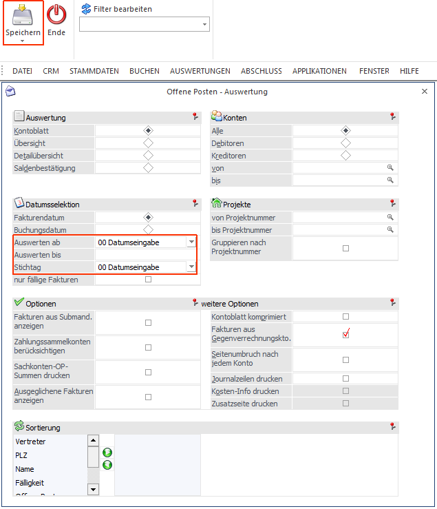
Ø Datumsselektion
Das Stichtagsdatum ist standardmäßig eine Auswahllistbox mit folgenden Eingabemöglichkeiten:
ü 0 Datumseingabe: Bei der Bestätigung dieses Eintrags wird die Auswahllistbox wieder zu einem Datumsfeld. Falls man wieder zurück auf die Comboansicht wechseln möchte, muss im Feld der Eintrag "D" eingegeben werden.
ü 1 Heute
ü 2 Gestern
ü 3 Anfang des Monats
ü 4 Ende des Monats
ü 5 Anfang des letzten Monats
ü 6 Ende des letzten Monats
ü 7 Anfang der Woche
ü 8 Ende der Woche
ü 9 Anfang der letzten Woche
ü 10 Ende der letzten Woche
Falls einer dieser Einträge gewählt wurde wird bei der Vorschau des Reports bzw. beim Erzeugen des Reports das Datum entsprechend belegt.
Ø Ausgabe
Die Auswahl Bildschirm/Drucker steht nicht zur Verfügung.
Ø Speichern
Durch Anwählen dieses Buttons werden die Einstellungen gespeichert.
Ø Ausdruck
Auf der letzten Seite der Ausgabe wird das Datum der Erstellung angedruckt.